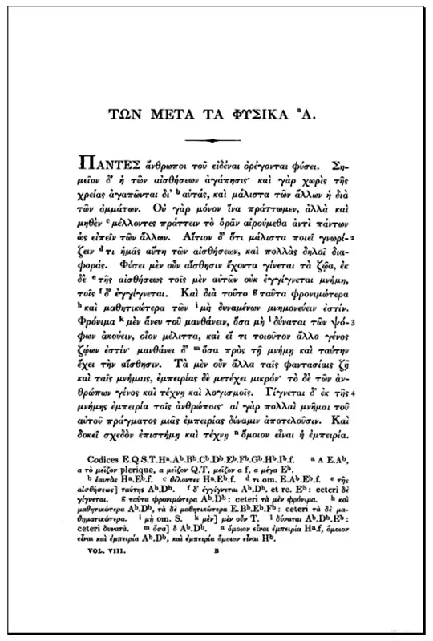
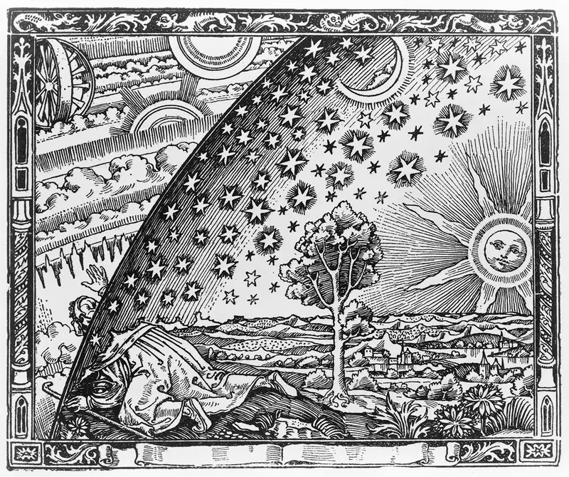
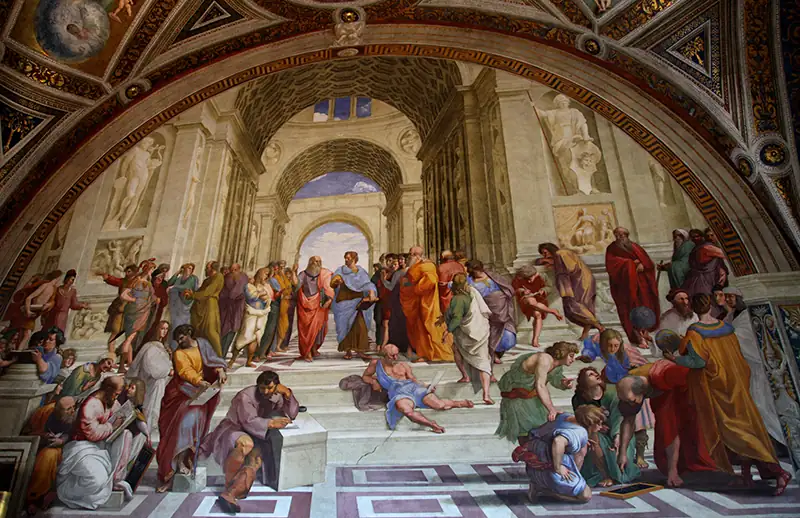
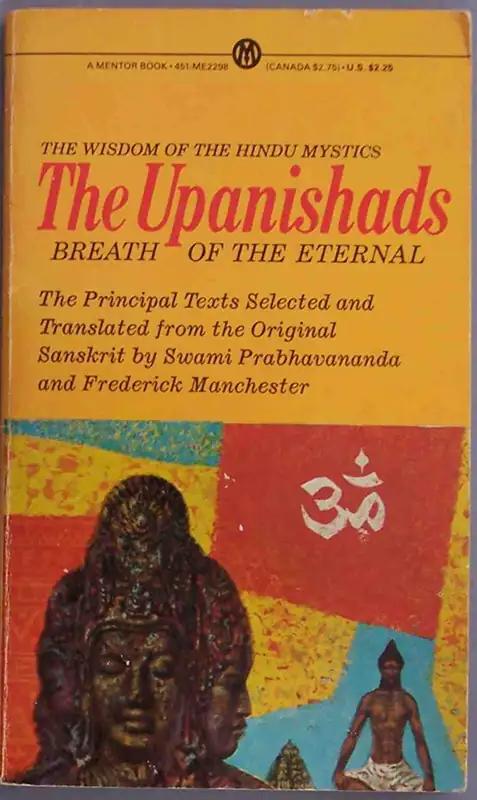
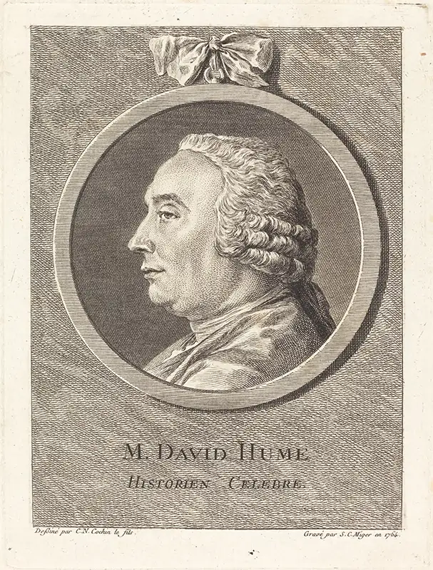
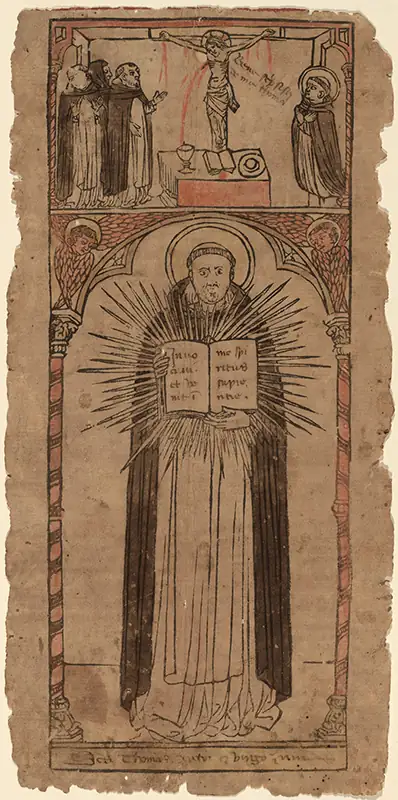
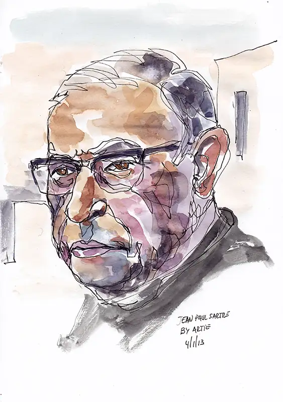

Chapter 6: Metaphysics¶
Introduction¶
Defining metaphysics is difficult. On a summary level, one possible definition is that metaphysics is the field of philosophy concerned with identifying that which is real. You may wonder why any reasonable person would invest time pursuing an answer to that which, at first glance, seems obvious. But on deeper inspection of the world around you, it can be challenging to identify what is real.
Consider the acorn. As you probably learned through life science, an acorn is destined to become an oak. If you were to look at the acorn and compare it to the oak, you would see two radically different things. How can a thing change and remain the same thing?
Aristotle offers insight into how the acorn and the oak represent change but within the same being. Within Aristotle’s thinking, each being has a specific end or purpose. As telos is Greek for “end” (end as target or goal), this view is known as teleological. In addition, each being is described as having a specific function (ergon) by which that being seeks the proper end.
In the case of an oak tree, the oak tree works from its acorn to the fullness of the oak. Aristotle describes the becoming as movement from a state of potentiality to actuality. You might say that which is most real concerning the oak stands beneath the movement from acorn to oak. The movement from potentiality toward actuality is one method to make sense of change while maintaining a constant or underlying sense of true being.
As you will discover, the topic of metaphysics is far-reaching and broaches many questions.
- What is real?
- What is being?
- Is there a purpose to our being?
- What is the self?
- Is there a God?
- Do human beings (however defined) possess free will?
Metaphysical questions tend not to be resting points but starting points. This chapter begins to explore many simple yet interrelated questions as part of seeking the real.

6.1 Substance¶
Learning Objectives
By the end of this section, you will be able to:
- Identify what constitutes a substance.
- Articulate the difference between monism and pluralism.
- Contrast Aristotle’s and Plato’s views of form and substance.
- Compare theories of substance in Greek and Indian philosophy.
The Latin term substantia, translated as substance, is often used to refer to the basic reality of a thing. The notion that reason could lay bare the secrets of the cosmos if properly applied was widespread throughout the ancient world. One of the early questions that philosophers in ancient Greece and India approached was that of fundamentality, or simply, What is the foundation of reality? What is the independent base for that which we consider to be real?
Fundamentality: The One and the Many¶
A reasonable starting point in the philosophical pursuit of the “really real” is to consider just how many real things exist. Is the real one, or is it many? You are probably puzzled by the question. Every day, you see and experience a plurality of beings. Common sense suggests that if you were to take a moment to observe the many different and ostensibly non-related things in your presence right now, you would most likely support a pluralistic view (there are many real things). Yet the framing of the real as one (the view known as monism) is also compelling.
Monism¶
One of the earliest metaphysical positions taken was monism. At its simplest form, monism is the belief that the most discrete or fundamental reality (i.e., “the really real”) is singular. This idea was held by the so-called pre-Socratics, a disparate group of philosophers who lived somewhat near each other and were born prior to Socrates but whose metaphysical positions, even if monistic, were wildly different. For example, they had different views of what the one “really real” is (see Table 6.1).
Table 6.1 Pre-Socratic Monists
| Date | Philosopher | The One Is: |
|---|---|---|
| c. 624–547 BCE | Thales of Miletus | water |
| c. 610–546 BCE | Anaximander of Miletus | the unbounded |
| c. 586–526 BCE | Anaximenes | air |
| c. 535–475 BCE | Heraclitus of Ephesus | fire |
| c. 515–445 BCE | Parmenides of Elea | Being |
It is tempting to look at the list of monistic answers and dismiss the thought quickly. Water, for example, is not the “really real.” Yet, as we see below, philosophers such as Thales of Miletus made a consistent, rational argument for monism. In his case, he argued in support of water as the fundamental substance.
Thales of Miletus¶
Studying the philosophers who predate Socrates is challenging, as in many cases their primary works did not survive. But there are transcribed fragments and the characterization of other philosophers from which to gain insights. There are also historians to give glimpses of what these thinkers posited. In the case of Thales, Aristotle is a useful source. Aristotle noted, “Thales, the founder of this school of philosophy, says the permanent entity is water (which is why he also propounded that the earth floats on water)” (Metaphysics 983b20). Why would anyone draw this conclusion? Aristotle suggested that Thales’s belief reflected the observations that all things are nourished through water, that heat itself is generated through the absence or removal of water, and that all things require water to live. The observations inherent to the position itself are understandable. How long can a person live without water? What happens to plants during drought? Water is, indeed, essential for any being.
The intellectual assumptions supporting the position are intriguing. First, Thales is working from the assumption that all things that are must be conceived as having only a material principle. Given how these thinkers made sense of the world around them, assuming only material causes (e.g. fire, water, air, etc.) is understandable. A second assumption informing the position is the notion that being either is or it is not. For these thinkers, there is no becoming (for example, change or evolving) from one fundamental substance, such as water, to another, such as fire. There is no state somewhere in between being and not being. By extension, being (once it is) cannot be generated or destroyed. Thus, primary being (the most real of reals) must be and must not be capable of not being (Aristotle, Metaphysics 983b).
Thales’s account of water as the most real is internally consistent, meaning the argument uses the evidence presented in such a way as to avoid asserting contradictory and potentially competing claims. However, his approach itself prioritizes reason over the overwhelming empirical evidence. As a result, he draws a conclusion that denies the reality of change, motion, and plurality that is experienced so readily.
Pluralism¶
Pluralism asserts that fundamental reality consists of many types of being. The pluralists viewed the “really real” as “many,” but like the pre-Socratic monists, they did not hold a uniform view concerning how to define the many or basic realities (see Table 6.2).
Table 6.2 Pre-Socratic Pluralists
| Date | Philosopher | The Many Is: |
|---|---|---|
| c. 500–428 BCE | Anaxagoras | moving bits of matter |
| c. 494–434 BCE | Empedocles | fire, air, water, earth |
| c. 5th century BCE | Leucippus | atoms (indivisible eternal bits of matter) |
| c. 460–370 BCE | Democritus | atoms (indivisible eternal bits of matter) |
One of the views that resonates with the contemporary reader is that of atomism. Note that the atomism alluded to here is different from what is referred to as atomic theory. The atom within the thinking of Leucippus and Democritus refers to atomos as meaning “uncuttable” or “that which cannot be divided.” The plurality we experience is the result of atoms in motion. These indivisible atoms have qualities such as shape, size, and motion that cause them to join and separate in configurations, which give rise to the objects we experience with our senses. In other words, the invisible world of atoms supports and causes the visible world of everyday objects, consisting of taste, color, odor, and sound. Atoms are the true being, and the visible objects are not!
Although it might appear that they have broken all philosophical ties with the monists, both the monists and pluralists agreed that true being was eternal. Anything real stayed as it was. Change happened to things that were not real. This assertion, however, leads to the unsatisfactory conclusion that neither the acorn nor the oak is real.
Atomism in Indian Philosophy¶
Indian atomism provides for foundational immutable substances while going further toward accounting for change and explaining the transformation of the acorn into the oak. One of the earliest of all atomic models was pioneered in the sixth centurty BCE by a philosopher named Acharya Kanad. According to legend, he was inspired by watching pilgrims scatter rice and grains at a temple. As he began to examine the rice, he realized that the grains, left alone, were without value. But once the grains were assembled into a meal, the collection of “anu” (atom) made a meal. So too were the beings we observe collections of indivisible particles.
Another tradition, the Nyāya-VaiśeṢika, proposed an atomic theory built upon two elements: 1) The presence of change within things or wholes, and 2) The doctrine of five elements (pañca mahābhūtas). Unlike the Greek atomist view explored earlier, this tradition held that atoms possessed sensible qualities like taste, odor, or color, causing those attributes to occur in the objects they compose. As noted by Chatterjee (2017), “An earth atom has odour, a water atom taste, a fire atom colour and an air atom has touch as specific attribute.”
The reasoning supporting the atomistic views described above is a priori. Using an appeal to reason (and not experience), it was asserted that all things were composed of parts, and therefore it was necessary to assert that all things were reducible to eternal, spherical, and indivisible building blocks. The potential of an infinite regress (anavasthā) suggested that parts could always be divided into smaller parts. However, reason dictated that there must be a logical starting point at which no smaller part could be admitted (Chatterjee, 2017).
Unlike the random bumping and grinding used by Democritus to explain how atoms combined to form wholes, the Nyāya-VaiśeṢika framework explained composition through the joining of similar atomic types to first form a dyad (dyaṇuka) and then a triad (tryaṇuka). Triads joined in varying permutations in order to build the objects, or “wholes,” we experience.
Ontological Perspectives on Substance¶
Up until now, this chapter has examined substance from a materialistic perspective—the concrete substances (water, fire, atoms) that make up the physical world that we see around us. As such, the discussion has been located squarely within a physicalism, an approach that equates the real world with the physical world. The study of existence, of being, of what is real—a discipline known as ontology—is broader. Ontos is the Greek participle from the verb “to be” and means “being.” What qualifies as being? How should we categorize being?
Naturalism¶
Naturalism, in its simplest form, is the view that meaningful inquiry includes only the physical and the laws governing physical entities and rejects the priority placed on reason assumed within metaphysics. For example, naturalism asserts that the inventory of beings allowed should include beings that are found within the physical realm. If we can see a thing or if we can test a thing within a laboratory environment, then a naturalist would include the being within their inventory. Naturalists also weed out the assumptions, theories, and questions that are introduced but are not capable of empirical proof.

The debate between supernaturalism (that accepts the existence of beings beyond or above our natural realm) and naturalism is as old as philosophical inquiry itself. But the tension became particularly relevant during the modern period. During modernity, scholars made advances across many disciplines based upon a turn to a scientific method and a rejection of a priori reasoning.
Connections
The chapter on logic and reasoning covers the topic of logic in greater detail.
The Allegory of the Cave¶
In Book VII of The Republic, Plato offered his allegory of the cave, which depicts prisoners who have mistaken shadows cast on the wall of the cave for real beings and therefore have mistaken illusion for truth. The prisoners have been imprisoned throughout their lives. They are chained in place and have been positioned so that they can only see shadows that are cast upon the wall in front of them. They have come to treat the shadows not as the reflections that they are, but as something real. In an unexpected plot twist, one prisoner escapes and reaches the cave entrance. There, for the first time, he sees the sun—the true source of light (knowledge). After adjusting to the overpowering light emanating from the sun, the prisoner realizes that a fire was causing objects to cast shadows on the cave wall. The shadows cast by the fire within the cave were reflections. He realized that the shadows are not actual being or truth—they were merely fading facsimiles of reality. The escaped prisoner, freed from the chains of his earlier captivity (metaphorically speaking), understands the true nature of being and truth. He returns to the cave to “free” his fellow captives, but his claim is rejected by those in chains.
Plato’s Notion of Substance and Form¶
The prisoners were mistaking shadows for that which was real. But shadows do not last. As soon as the source of light fades, the shadows too disappear. If we want to identify the really real, Plato argued, we need to go beyond mere shadows and try to find those beings whose reality is not temporary. The idea or form of a thing, unlike the material “shadow,” was not subject to atrophy and change.
The Latin term substantia, translated as “substance,” describes the basic reality or essence of a thing that supports or stands under features that are incidental to the substance itself. While the so-called incidental features (e.g., quantity, time, place, etc.) can change, the essence of the entity endures. To account for the fundamental whatness of a thing, Plato posited an unchanging form or idea as the underlying and unchanging substance. As all things within a person’s reality are subject to change, Plato reasoned that the forms or unchanging basic realities concerning all things must not be located within this world. He therefore posited a realm in which change did not occur.
There is an intuitive appeal to Plato’s accounting of the real to forms. How else could we explain our ability to recognize a type of being given the sheer number of differences we will observe in the instances of a thing? We can make sense of dog, for example, because beyond the differences found among spaniels, poodles, and retrievers, there is a form of dog that accounts for knowing dog and being as dog.
Aristotle on Matter and Form¶
Aristotle, a student of Plato, disagreed with his teacher. If forms did exist, he challenged, then how could forms influence things? How could an immaterial form–which lacks matter—cause change to material entities?
In addition, what about concepts that are not easily reducible to a simple meaning or idea? Aristotle noted that “good was said in many ways” (Ethics 1096a–b as found in Adamson 2016, 232). The reduction to a single form to identify the whatness for something works when the concept is simple but does not work when a wide-ranging concept (such as “the good”) is considered. Aristotle agreed with the approach of isolating dogness as the essence, but through the study of specific instances or particulars. He encouraged natural observation of the entity in question and introduced the categories of species and genera.
Unlike Plato, Aristotle does not posit an otherworldly form or collection of forms. In his middle and later works, Aristotle explained substance through a composite of matter and form. Form, much like an idea a sculptor has in mind, is the unchanging purpose or whatness informing each particular or individual instance. In this case of a sculpture, the sculptor’s vision or idea was referred to as the formal cause. The marble would be the material cause. The ability and artistic skill of the sculptor was termed the efficient cause. The final cause reflected the purpose of the being, or the reason why the sculpture was made in the first place.
The idea of substance being a composite of form within matter became known as hylomorphism. The Greek word hyle translates as “wood.” Here wood is figurative, a symbol of basic building material that is shaped by the form within a particular instance. The form does not reside in the Platonic heavens but, through purpose and efficiency, moves a particular thing from its beginning state (potentiality) along a continuum toward its final goal (actuality). The acorn is driven by its form and purpose to become the mighty oak. The movement from potentiality to actuality requires material and the efficient (proper) application of these materials such that the acorn can become!

The attitudes of Plato and Aristotle are reflected in Figure 6.5. The School of Athens was discussed in the introduction to philosophy chapter. This section details the interaction between the two central characters in the fresco painting. Plato is the subject displayed to the left of center, and Aristotle is the subject depicted to the right of center. Plato’s gesture toward the heavens with his right hand was the artist’s way of recognizing Plato’s theory of forms. For Plato, forms were immutable and the ultimate reality. Forms were supposed to exist outside of our earthly realm as the things we observe are subject to change. Aristotle’s gesture with his right hand was the artist’s representation of Aristotle’s stressing of the form embedded within particular matter. The ultimate reality was supposed to be within each instance of matter observed. The material components were subject to change, but the form was not.
What do you think? The crucial difference introduced at this historical point was the emphasis placed upon particulars—individual instances of an entity—by Aristotle. While Plato stressed forms and asserted that there could be no individual instance without the form, Aristotle stressed particulars and asserted that without individual instances, there could be no knowledge of the form. Whereas Plato holds that beauty itself causes the beauty we see in flowers or faces, Aristotle asserts that there is no such thing as beauty without beautiful things, such as flowers and faces (Adamson, 2016, p. 231).
Podcast
Listen to the podcast “Aristotle on Substance” in the series The History of Philosophy without Any Gaps.
6.2 Self and Identity¶
Learning Objectives
By the end of this section, you will be able to:
- Apply the dilemma of persistence to self and identity.
- Outline Western and Eastern theological views of self.
- Describe secular views of the self.
- Describe the mind-body problem.
Today, some might think that atomism and Aristotle’s teleological view have evolved into a theory of cells that resolves the acorn-oak tree identity problem. The purpose, or ergon, of both the acorn and the oak tree are present in the zygote, the cell that forms when male and female sex cells combine. This zygote cell contains the genetic material, or the instructions, for how the organism will develop to carry out its intended purpose.
But not all identity problems are so easily solved today. What if the author of this chapter lived in a house as a child, and years later, after traveling in the highly glamorous life that comes with being a philosopher, returned to find the house had burned down and been rebuilt exactly as it had been. Is it the same home? The generic questions that center on how we should understand the tension between identity and persistence include:
- Can a thing change without losing its identity?
- If so, how much change can occur without a loss of identity for the thing itself?
This section begins to broach these questions of identity and self.
The Ship of Theseus¶
Consider the following thought experiment. Imagine a wooden ship owned by the hero Theseus. Within months of launching, the need to replace decking would be evident. The salt content of sea water is highly corrosive. Accidents can also happen. Within a common version of the thought experiment, the span of one thousand years is supposed. Throughout the span, it is supposed that the entire decking and wooden content of the ship will have been replaced. The name of the ship remains constant. But given the complete change of materials over the assumed time span, in what sense can we assert that the ship is the same ship? We are tempted to conceptualize identity in terms of persistence, but the Ship of Theseus challenges the commonly held intuition regarding how to make sense of identity.
Similarly, as our bodies develop from zygote to adult, cells die and are replaced using new building materials we obtain though food, water, and our environment. Given this, are we the same being as we were 10 or 20 years ago? How can we identify what defines ourselves? What is our essence? This section examines answers proposed by secular and religious systems of belief.
Write Like a Philosopher
Watch the video “Metaphysics: Ship of Theseus” in the series Wi-Phi Philosophy. You will find five possible solutions for making sense of the thought experiment. Pick one solution and explain why the chosen solution is the most salient. Can you explain how the strengths outweigh the stated objections—without ignoring the objections?
Judeo-Christian Views of Self¶
The common view concerning identity in Judeo-Christian as well as other spiritual traditions is that the self is a soul. In Western thought, the origin of this view can be traced to Plato and his theory of forms. This soul as the real self solves the ship of Theseus dilemma, as the soul continuously exists from zygote or infant and is not replaced by basic building materials. The soul provides permanence and even persists into the afterlife.
Much of the Christian perspective on soul and identity rested on Aristotle’s theory of being, as a result of the work of St. Thomas Aquinas. Aquinas, a medieval philosopher, followed the Aristotelian composite of form and matter but modified the concept to fit within a Christianized cosmology. Drawing upon portions of Aristotle’s works reintroduced to the West as a result of the Crusades, Aquinas offered an alternative philosophical model to the largely Platonic Christian view that was dominant in his day. From an intellectual historical perspective, the reintroduction of the Aristotelian perspective into Western thought owes much to the thought of Aquinas.
In Being and Essence, Aquinas noted that there was a type of existence that was necessary and uncaused and a type of being that was contingent and was therefore dependent upon the former to be brought into existence. While the concept of a first cause or unmoved mover was present within Aristotle’s works, Aquinas identified the Christian idea of God as the “unmoved mover.” God, as necessary being, was understood as the cause of contingent being. God, as the unmoved mover, as the essence from which other contingent beings derived existence, also determined the nature and purpose driving all contingent beings. In addition, God was conceived of as a being beyond change, as perfection realized. Using Aristotelian terms, we could say that God as Being lacked potentiality and was best thought of as that being that attained complete actuality or perfection—in other words, necessary being.
God, as the ultimate Good and Truth, will typically be understood as assigning purpose to the self. The cosmology involved is typically teleological—in other words, there is a design and order and ultimately an end to the story (the eschaton). Members of this tradition will assert that the Divine is personal and caring and that God has entered the narrative of our history to realize God’s purpose through humanity. With some doctrinal exception, if the self lives the good life (a life according to God’s will), then the possibility of sharing eternity with the Divine is promised.
Think Like a Philosopher
Watch this discussion with Timothy Pawl on the question of eternal life, part of the PBS series Closer to the Truth, “Imagining Eternal Life”.
Is eternal life an appealing prospect? If change is not possible within heaven, then heaven (the final resting place for immortal souls) should be outside of time. What exactly would existence within an eternal now be like? In the video, Pawl claimed that time has to be present within eternity. He argued that there must be movement from potentiality to actuality. How can that happen in an eternity?
Hindu and Buddhist Views of Self¶
Within Hindu traditions, atman is the term associated with the self. The term, with its roots in ancient Sanskrit, is typically translated as the eternal self, spirit, essence, soul, and breath (Rudy, 2019). Western faith traditions speak of an individual soul and its movement toward the Divine. That is, a strong principle of individuation is applied to the soul. A soul is born, and from that time forward, the soul is eternal. Hinduism, on the other hand, frames atman as eternal; atman has always been. Although atman is eternal, atman is reincarnated. The spiritual goal is to “know atman” such that liberation from reincarnation (moksha) occurs.
Brahman¶
Hindu traditions vary in the meaning of brahman. Some will speak of a force supporting all things, while other traditions might invoke specific deities as manifestations of brahman. Escaping the cycle of reincarnation requires the individual to realize that atman is brahman and to live well or in accordance with dharma, observing the code of conduct as prescribed by scripture, and karma, actions and deeds. Union of the atman with brahman can be reach though yoga, meditation, rituals, and other practices.

Buddha rejected the concept of brahman and proposed an alternate view of the world and the path to liberation. The next sections consider the interaction between the concepts of Atman (the self) and Brahman (reality).
The Doctrine of Dependent Origination¶
Buddhist philosophy rejects the concept of an eternal soul. The doctrine of dependent origination, a central tenet within Buddhism, is built on the claim that there is a causal link between events in the past, the present, and the future. What we did in the past is part of what happened previously and is part of what will be.
The doctrine of dependent origination (also known as interdependent arising) is the starting point for Buddhist cosmology. The doctrine here asserts that not only are all people joined, but all phenomena are joined with all other phenomena. All things are caused by all other things, and in turn, all things are dependent upon other things. Being is a nexus of interdependencies. There is no first cause or prime mover in this system. There is no self—at least in the Western sense of self—in this system (O’Brien 2019a).
The Buddhist Doctrine of No Self (Anatman)¶
One of many distinct features of Buddhism is the notion of anatman as the denial of the self. What is being denied here is the sense of self expressed through metaphysical terms such as substance or universal being. Western traditions want to assert an autonomous being who is strongly individuated from other beings. Within Buddhism, the “me” is ephemeral.
Podcast
Listen to the podcast “Graham Priest on Buddhism and Philosophy” in the series Philosophy Bites.
Suffering and Liberation¶
Within Buddhism, there are four noble truths that are used to guide the self toward liberation. An often-quoted sentiment from Buddhism is the first of the four noble truths. The first noble truth states that “life is suffering” (dukkha).
But there are different types of suffering that need to be addressed in order to understand more fully how suffering is being used here. The first meaning (dukkha-dukkha) is commensurate with the ordinary use of suffering as pain. This sort of suffering can be experienced physically and/or emotionally. A metaphysical sense of dukkha is viparinama-dukkha. Suffering in this sense relates to the impermanence of all objects. It is our tendency to impose permanence upon that which by nature is not, or our craving for ontological persistence, that best captures this sense of dukkha. Finally, there is samkhara-dukkha, or suffering brought about through the interdependency of all things.
Building on an understanding of “suffering” informed only by the first sense, some characterize Buddhism as “life is suffering; suffering is caused by greed; suffering ends when we stop being greedy; the way to do that is to follow something called the Eightfold Path” (O’Brien 2019b). A more accurate understanding of dukkha within this context must include all three senses of suffering.
The second of the noble truths is that the cause of suffering is our thirst or craving (tanha) for things that lack the ability to satisfy our craving. We attach our self to material things, concepts, ideas, and so on. This attachment, although born of a desire to fulfill our internal cravings, only heightens the craving. The problem is that attachment separates the self from the other. Through our attachments, we lose sight of the impermanence not only of the self but of all things.
The third noble truth teaches that the way to awakening (nirvana) is through a letting go of the cravings. Letting go of the cravings entails the cessation of suffering (dukkha).
The fourth truth is founded in the realization that living a good life requires doing, not just thinking. By living in accordance with the Eightfold Path, a person may live such that “every action of body, mind, and speech” are geared toward the promotion of dharma.
Video: Buddhism’s Four Noble Truths
Part of the BBC Radio 4 series A History of Ideas, this clip is narrated by Steven Fry and scripted by Nigel Warburton.
The Five Aggregates¶
How might the self (atman) experience the world and follow a path toward liberation? Buddhist philosophy posits five aggregates (skandhas), which are the thoughtful and iterative processes, through which the self interacts with the world.
- Form (rupa): the aggregate of matter, or the body.
- Sensation (vedana): emotional and physical feelings.
- Perception (samjna): thinking, the processing of sense data; “knowledge that puts together.”
- Mental formation (samskara): how thoughts are processed into habits, predispositions, moods, volitions, biases, interests, etc. The fourth skandhas is related to karma, as much of our actions flow from these elements.
- Consciousness (vijnana): awareness and sensitivity concerning a thing that does not include conceptualization.
Although the self uses the aggregates, the self is not thought of as a static and enduring substance underlying the processes. These aggregates are collections that are very much subject to change in an interdependent world.
Secular Notions of Self¶
In theology, continuity of the self is achieved through the soul. Secular scholars reject this idea, defining self in different ways, some of which are explored in the next sections.
Bundle Theory¶
One of the first and most influential scholars in the Western tradition to propose a secular concept of self was Scottish philosopher David Hume (1711–1776). Hume formed his thoughts in response to empiricist thinkers’ views on substance and knowledge. British philosopher John Locke (1632–1704) offered a definition of substance in his Essay Concerning Human Understanding. In Book XXIII, Locke described substance as “a something, I know not what.” He asserted that although we cannot know exactly what substance is, we can reason from experience that there must be a substance “standing under or upholding” the qualities that exist within a thing itself. The meaning of substance is taken from the Latin substantia, or “that which supports.”
If we return to the acorn and oak example, the reality of what it means to be an oak is rooted in the ultimate reality of what it means to be an oak tree. The ultimate reality, like the oak’s root system, stands beneath every particular instance of an oak tree. While not every tree is exactly the same, all oak trees do share a something, a shared whatness, that makes an oak an oak. Philosophers call this whatness that is shared among oaks a substance.
Arguments against a static and enduring substance ensued. David Hume’s answer to the related question of “What is the self?” illustrates how a singular thing may not require an equally singular substance. According to Hume, the self was not a Platonic form or an Aristotelian composite of matter and form. Hume articulated the self as a changing bundle of perceptions. In his Treatise of Human Nature (Book 1, Part IV), Hume described the self as “a bundle or collection of different perceptions, which succeed each other with inconceivable rapidity, and are in a perpetual flux and movement.”
Hume noted that what has been mistaken for a static and enduring self was nothing more than a constantly changing set of impressions that were tied together through their resemblance to one another, the order or predictable pattern (succession) of the impressions, and the appearance of causation lent through the resemblance and succession. The continuity we experience was not due to an enduring self but due to the mind’s ability to act as a sort of theater: “The mind is a kind of theatre, where several perceptions successively make their appearance; pass, re-pass, glide away, and mingle in an infinite variety of postures and situations” (Hume 1739, 252).

Which theories of self—and substance—should we accept? The Greek theories of substance and the theological theories of a soul offer advantages. Substance allows us to explain what we observe. For example, an apple, through its substance, allows us to make sense of the qualities of color, taste, the nearness of the object, etc. Without a substance, it could be objected that the qualities are merely unintelligible and unrelated qualities without a reference frame. But bundle theory allows us to make sense of a thing without presupposing a mythical form, or “something I know not what!” Yet, without the mythical form of a soul, how do we explain our own identities?
Anthropological Views¶
Anthropological views of the self question the cultural and social constructs upon which views of the self are erected. For example, within Western thought, it is supposed that the self is distinct from the “other.” In fact, throughout this section, we have assumed the need for a separate and distinct self and have used a principle of continuity based on the assumption that a self must persist over time. Yet, non-Western cultures blur or negate this distinction. The African notion of ubuntu, for example, posits a humanity that cannot be divided. The Nguni proverb that best describes this concept is “umuntu ngumuntu ngabantu” sometimes translated as “a person is a person through other persons” (Gade 2011). The word ubuntu is from the Zulu language, but cultures from southern Africa to Tanzania, Kenya, and Democratic Republic of the Congo all have words for this concept. Anthropological approaches attempt to make clear how the self and the culture share in making meaning.
The Mind as Self¶
Many philosophers, Western and non-Western, have equated the self to the mind. But what is the mind? A monist response is the mind is the brain. Yet, if the mind is the brain, a purely biological entity, then how do we explain consciousness? Moreover, if we take the position that the mind is immaterial but the body is material, we are left with the question of how two very different types of things can causally affect the other. The question of “How do the two nonidentical and dissimilar entities experience a causal relationship?” is known as the mind-body problem. This section explores some alternative philosophical responses to these questions.
Physicalism¶
Reducing the mind to the brain seems intuitive given advances in neuroscience and other related sciences that deepen our understanding of cognition. As a doctrine, physicalism is committed to the assumption that everything is physical. Exactly how to define the physical is a matter of contention. Driving this view is the assertion that nothing that is nonphysical has physical effects.
Think Like a Philosopher
Listen to the podcast “David Papineau on Physicalism” in the series Philosophy Bites.
Focus on the thought experiment concerning what Mary knows. Here is a summary of the thought experiment:
Mary is a scientist and specializes in the neurophysiology of color. Strangely, her world has black, white, and shades of gray but lacks color (weird, but go with it!). Due to her expertise, she knows every physical fact concerning colors. What if Mary found herself in a room in which color as we experience it is present? Would she learn anything? A physicalist must respond “no”! Do you agree? How would you respond?
John Locke and Identity¶
In place of the biological, Locke defined identity as the continuity lent through what we refer to as consciousness. His approach is often referred to as the psychological continuity approach, as our memories and our ability to reflect upon our memories constitute identity for Locke. In his Essay on Human Understanding, Locke (as cited by Gordon-Roth 2019) observed, “We must consider what Person stands for . . . which, I think, is a thinking intelligent Being, that has reason and reflection, and can consider it self as itself, the same thinking thing in different times and places.” He offered a thought experiment to illustrate his point. Imagine a prince and cobbler whose memories (we might say consciousness) were swapped. The notion is far-fetched, but if this were to happen, we would assert that the prince was now the cobbler and the cobbler was now the prince. Therefore, what individuates us cannot be the body (or the biological).
Video: John Locke on Personal Identity
Part of the BBC Radio 4 series A History of Ideas, this clip is narrated by Gillian Anderson and scripted by Nigel Warburton.
The Problem of Consciousness¶
Christof Koch (2018) has said that “consciousness is everything you experience.” Koch offered examples, such as “a tune stuck in your head,” the “throbbing pain from a toothache,” and “a parent’s love for a child” to illustrate the experience of consciousness. Our first-person experiences are what we think of intuitively when we try to describe what consciousness is. If we were to focus on the throbbing pain of a toothache as listed above, we can see that there is the experiencing of the toothache. Curiously, there is also the experiencing of the experiencing of the toothache. Introspection and theorizing built upon first-person inspections affords vivid and moving accounts of the things experienced, referred to as qualia.
An optimal accounting of consciousness, however, should not only explain what consciousness is but should also offer an explanation concerning how consciousness came to be and why consciousness is present. What difference or differences does consciousness introduce?
Podcast
Listen to the podcast “Ted Honderich on What It Is to Be Conscious,” in the series Philosophy Bites.
Rene Descartes and Dualism¶
Dualism, as the name suggests, attempts to account for the mind through the introduction of two entities. The dualist split was addressed earlier in the discussion of substance. Plato argued for the reality of immaterial forms but admitted another type of thing—the material. Aristotle disagreed with his teacher Plato and insisted on the location of the immaterial within the material realm. How might the mind and consciousness be explained through dualism?
Video: Mind Body Dualism
A substance dualist, in reference to the mind problem, asserts that there are two fundamental and irreducible realities that are needed to fully explain the self. The mind is nonidentical to the body, and the body is nonidentical to the mind. The French philosopher René Descartes (1596–1650) offered a very influential version of substance dualism in his 1641 work Meditations on First Philosophy. In that work, Descartes referred to the mind as a thinking thing (res cogitans) and the body as an extended nonthinking thing (res extensa). Descartes associated identity with the thinking thing. He introduced a model in which the self and the mind were eternal.
Behaviorism¶
There is a response that rejects the idea of an independent mind. Within this approach, what is important is not mental states or the existence of a mind as a sort of central processor, but activity that can be translated into statements concerning observable behavior (Palmer 2016, 122). As within most philosophical perspectives, there are many different “takes” on the most correct understanding. Behaviorism is no exception. The “hard” behaviorist asserts that there are no mental states. You might consider this perspective the purist or “die-hard” perspective. The “soft” behaviorist, the moderate position, does not deny the possibility of minds and mental events but believes that theorizing concerning human activity should be based on behavior.
Before dismissing the view, pause and consider the plausibility of the position. Do we ever really know another’s mind? There is some validity to the notion that we ought to rely on behavior when trying to know or to make sense of the “other.” But if you have a toothache, and you experience myself being aware of the qualia associated with a toothache (e.g., pain, swelling, irritability, etc.), are these sensations more than activities? What of the experience that accompanies the experience?
6.3 Cosmology and the Existence of God¶
Learning Objectives
By the end of this section, you will be able to:
- Describe teleological and moral arguments for the existence of God.
- Outline Hindu cosmology and arguments for and against the divine.
- Explain Anselm’s ontological argument for the existence of God.
- Articulate the distinction between the logical and evidential problems of evil.
Another major question in metaphysics relates to cosmology. Cosmology is the study of how reality is ordered. How can we account for the ordering, built upon many different elements such as causation, contingency, motion, and change, that we experience within our reality? The primary focus of cosmological arguments will be on proving a logically necessary first cause to explain the order observed. As discussed in earlier sections, for millennia, peoples have equated the idea of a first mover or cause with the divine that exists in another realm. This section will discuss a variety of arguments for the existence of God as well as how philosophers have reconciled God's existence with the presence of evil in the world.
Teleological Arguments for God¶
Teleological arguments examine the inherent design within reality and attempt to infer the existence of an entity responsible for the design observed. Teleological arguments consider the level of design found in living organisms, the order displayed on a cosmological scale, and even how the presence of order in general is significant.
Aquinas’s Design Argument¶
Thomas Aquinas’s Five Ways is known as a teleological argument for the existence of God from the presence of design in experience. Here is one possible formulation of Aquinas’s design argument:
-
Things that lack knowledge tend to act toward an end/goal.
-
These things act toward an end either by chance or by design.
A. It is obvious that it is not by chance.
B. Things that lack knowledge act toward an end by design.
-
If a thing is being directed toward an end, it requires direction by some being endowed with intelligence (e.g. the arrow being directed by the archer).
-
Therefore, some intelligent being exists that directs all natural things toward their end. This being is known as God.

Design Arguments in Biology¶
Though Aquinas died long ago, his arguments still live on in today’s discourse, exciting passionate argument. Such is the case with design arguments in biology. William Paley (1743–1805) proposed a teleological argument, sometimes called the design argument, that there exists so much intricate detail, design, and purpose in the world that we must suppose a creator. The sophistication and incredible detail we observe in nature could not have occurred by chance.
Paley employs an analogy between design as found within a watch and design as found within the universe to advance his position. Suppose you were walking down a beach and you happened to find a watch. Maybe you were feeling inquisitive, and you opened the watch (it was an old-fashioned pocket watch). You would see all the gears and coils and springs. Maybe you would wind up the watch and observe the design of the watch at work. Considering the way that all the mechanical parts worked together toward the end/goal of telling time, you would be reluctant to say that the watch was not created by a designer.
Now consider another object—say, the complexity of the inner workings of the human eye. If we can suppose a watchmaker for the watch (due to the design of the watch), we must be able to suppose a designer for the eye. For that matter, we must suppose a designer for all the things we observe in nature that exhibit order. Considering the complexity and grandeur of design found in the world around us, the designer must be a Divine designer. That is, there must be a God.
Often, the design argument is formulated as an induction:
- In all things we have experienced that exhibit design, we have experienced a designer of that artifact.
- The universe exhibits order and design.
- Given #1, the universe must have a designer.
- The designer of the universe is God.
Think Like a Philosopher
Read “The Fine-Tuning Argument for the Existence of God” by Thomas Metcalf.
Evaluate the arguments and counterarguments presented in this short article. Which are the most cogent, and why?
Moral Arguments for God¶
Another type of argument for the existence of God is built upon metaethics and normative ethics. Consider subjective and objective values. Subjective values are those beliefs that guide and drive behaviors deemed permissible as determined by either an individual or an individual’s culture. Objective values govern morally permissible and desired outcomes that apply to all moral agents. Moral arguments for the existence of God depend upon the existence of objective values.
If there are objective values, then the question of “Whence do these values come?” must be raised. One possible answer used to explain the presence of objective values is that the basis of the values is found in God. Here is one premise/conclusion form of the argument:
- If objective values exist, there must be a source for their objective validity.
- The source of all value (including the validity held by objective values) is God.
- Objective values do exist.
- Therefore, God exists.
This argument, however, raises questions. Does moral permissibility (i.e., right and wrong) depend upon God? Are ethics an expression of the divine, or are ethics better understood separate from divine authority? To explore this topic further, students will find a helpful overview and updated references in the Stanford Encyclopedia article, "Moral Arguments for the Existence of God."
Write Like a Philosopher
Watch “God & Morality: Part 2” by Steven Darwall.
Darwall’s argument for the autonomy of ethics may be restated as follows:
- God knows morality best (1:44).
- God knows what is best for us (2:12).
- God has authority over us (2:48).
How does Darwall refute the conclusion? What is the evidence offered, and at what point within the argument is the evidence introduced? What does his approach suggest about refutational strategies? Can you refute Darwall’s argument?
As you write, begin by defining the conclusion. Remember that in philosophy, conclusions are not resting points but mere starting points. Next, present the evidence, both stated and unstated, and explain how it supports the conclusion.
The Ontological Argument for God¶
An ontological argument for God was proposed by the Italian philosopher, monk, and Archbishop of Canterbury Anselm (1033–1109). Anselm lived in a time where belief in a deity was often assumed. He, as a person and as a prior of an abbey, had experienced and witnessed doubt. To assuage this doubt, Anselm endeavored to prove the existence of God in such an irrefutable way that even the staunchest of nonbelievers would be forced, by reason, to admit the existence of a God.
Anselm’s proof is a priori and does not appeal to empirical or sense data as its basis. Much like a proof in geometry, Anselm is working from a set of “givens” to a set of demonstrable concepts. Anselm begins by defining the most central term in his argument—God. For the purpose of this argument, Anselm suggests, let “God” = “a being than which nothing greater can be conceived.” He makes two key points:
- When we speak of God (whether we are asserting God is or God is not), we are contemplating an entity who can be defined as “a being than which nothing greater can be conceived.”
- When we speak of God (either as believer or nonbeliever), we have an intramental understanding of that concept—in other words, the idea is within our understanding.
Anselm continues by examining the difference between that which exists in the mind and that which exists both in the mind and outside of the mind. The question is: Is it greater to exist in the mind alone or in the mind and in reality (or outside of the mind)? Anselm asks you to consider the painter—for example, define which is greater: the reality of a painting as it exists in the mind of an artist or that same painting existing in the mind of that same artist and as a physical piece of art. Anselm contends that the painting, existing both within the mind of the artist and as a real piece of art, is greater than the mere intramental conception of the work.
At this point, a third key point is established:
-
It is greater to exist in the mind and in reality than to exist in the mind alone.
Have you figured out where Anselm is going with this argument?
A. If God is a being than which nothing greater can be conceived (established in #1 above);
B. And since it is greater to exist in the mind and in reality than in the mind alone (established in #3 above);
C. Then God must exist both in the mind (established in #2 above) and in reality;
D. In short, God must be. God is not merely an intramental concept but an extra-mental reality as well.
Hindu Cosmology¶
One of the primary arguments for the existence of God as found within Hindu traditions is based on cosmological conditions necessary to explain the reality of karma. As explained in the introduction to philosophy chapter and earlier in this chapter, karma may be thought of as the causal law that links causes to effects. Assuming the doctrine of interdependence, karma asserts that if we act in such a way to cause harm to others, we increase the amount of negativity in nature. We therefore hurt ourself by harming others. As the self moves through rebirth (samsara), the karmic debt incurred is retained. Note that positive actions also are retained. The goal is liberation of the soul from the cycle of rebirth.
Maintenance of the Law of Karma¶
While one can understand karmic causality without an appeal to divinity, how the causal karmic chain is so well-ordered and capable of realizing just results is not as easily explainable without an appeal to divinity. One possible presentation of the argument for the existence of God from karma could therefore read as follows:
- If karma is, there must be some force/entity that accounts for the appropriateness (justice) of the karmic debt or karmic reward earned.
- The source responsible for the appropriateness (justice) of the debt or reward earned must be a conscious agent capable of lending order to all karmic interactions (past, present, and future).
- Karmic appropriateness (justice) does exist.
- Therefore, a conscious agent capable of lending order to all karmic interactions (past, present, and future) must exist.
- Therefore, God exists.
Physical World as Manifestation of Divine Consciousness¶
The cosmology built upon the religious doctrines allows for an argument within Hindu thought that joins a version of the moral argument and the design argument. Unless a divine designer were assumed, the moral and cosmological fabric assumed within the perspective could not be asserted.
Hindu Arguments Against the Existence of God¶
One of the primary arguments against the existence of God is found in the Mīmāmsā tradition. This ancient school suggests that the Vedas were eternal but without authors. The cosmological and teleological evidence as examined above was deemed inconclusive. The focus of this tradition and its several subtraditions was on living properly.
Problem of Evil¶
The problem of evil poses a philosophical challenge to the traditional arguments (in particular the design argument) because it implies that the design of the cosmos and the designer of the cosmos are flawed. How can we assert the existence of a caring and benevolent God when there exists so much evil in the world? The glib answer to this question is to say that human moral agents, not God, are the cause of evil. Some philosophers reframe the problem of evil as the problem of suffering to place the stress of the question on the reality of suffering versus moral agency.
The Logical Problem of Evil¶
David Hume raised arguments not only against the traditional arguments for the existence of God but against most of the foundational ideas of philosophy. Hume, the great skeptic, starts by proposing that if God knows about the suffering and would stop it but cannot stop it, God is not omnipotent. If God is able to stop the suffering and would want to but does not know about it, then God is not omniscient. If God knows about the suffering and is able to stop it but does not wish to assuage the pain, God is not omnibenevolent. At the very least, Hume argues, the existence of evil does not justify a belief in a caring Creator.
The Evidential Problem of Evil¶
The evidential problem considers the reality of suffering and the probability that if an omnibenevolent divine being existed, then the divine being would not allow such extreme suffering. One of the most formidable presentations of the argument was formulated by William Rowe:
- There exist instances of intense suffering which an omnipotent, omniscient being could have prevented without thereby losing some greater good or permitting some evil equally bad or worse.
- An omniscient, wholly good being would prevent the occurrence of any intense suffering it could, unless it could not do so without thereby losing some greater good or permitting some evil equally bad or worse.
- (Therefore) there does not exist an omnipotent, omniscient, wholly good being. (Rowe 1979, 336)
Western Theistic Responses to the Problem of Evil¶
Many theists (those who assert the existence of god/s) have argued against both the logical and evidential formulations of the problem of evil. One of the earliest Christian defenses was authored by Saint Augustine. Based upon a highly Neo-Platonic methodology and ontology, Augustine argued that as God was omnibenevolent (all good), God would not introduce evil into our existence. Evil, observed Augustine, was not real. It was a privation or negation of the good. Evil therefore did not argue against the reality or being of God but was a reflection for the necessity of God. Here we see the application of a set of working principles and the stressing of a priori resulting in what could be labeled (prima facie) a counterintuitive result.
An African Perspective on the Problem of Evil¶
In the above sections, the problem of evil was centered in a conception of a god as all-powerful, all-loving, and all-knowing. Evil, from this perspective, reflects a god doing evil (we might say reflecting the moral agency of a god) and thus results in the aforementioned problem—how could a “good” god do evil or perhaps allow evil to happen? The rich diversity of African thought helps us examine evil and agency from different starting points. What if, for example, the lifting of the agency (the doing of evil) was removed entirely from the supernatural? In much of Western thought, God was understood as the creator. Given the philosophical role and responsibilities that follow from the assignment of “the entity that made all things,” reconciling evil and creation and God as good becomes a problem. But if we were to remove the concept of God from the creator role, the agency of evil (and reconciling evil with the creator) is no longer present.
Within the Yoruba-African perspective, the agency of evil is not put upon human agency, as might be expected in the West, but upon “spiritual beings other than God” (Dasaolu and Oyelakun 2015). These multiple spiritual beings, known as “Ajogun,” are “scattered around the cosmos” and have specific types of wrongdoing associated specifically with each being (Dasaolu and Oyelakun 2015). Moving the framework (or cosmology) upon which goodness and evil is understood results in a significant philosophical shift. The meaning of evil, instead of being packed with religious or supernatural connotations, has a more down-to-earth sense. Evil is not so much sin as a destruction of life. It is not an offense against an eternal Creator, but an action conducted by one human moral agent that harms another human moral agent.
Unlike Augustine’s attempt to explain evil as the negation of good (as not real), the Yoruban metaphysics asserts the necessity of evil. Our ability to contrast good and evil are required logically so that we can make sense of both concepts.
6.4 Free Will¶
Learning Objectives
By the end of this section, you will be able to:
- Define free will.
- Explain how determinism, libertarianism, and compatibilism are different.
Though the presence of evil in the world suggests that we have free will, the idea of a first mover or an all-powerful divine being challenges the idea that we might have free will in the material world. Throughout most of our experiences, it seems as if we are free. When we complete a task, we seem very capable of marking this experience as different from being free. But what if the sensation of freedom does not demonstrate the presence of freedom?
Amusement parks often have rides that consist of a car on a track that has safety features forcing the car to stay within predetermined paths. In most cases, there is an accelerator, a brake, and a steering wheel. Some rides have strategically placed rubber boundaries guiding the vehicle, while others have a steel post hidden underneath the car that guides the car by means of a predetermined tract. While “driving” the car, the young driver feels free to choose the direction. As vivid as the experience for the driver may be, the thrill and phenomenon does not prove the presence or existence of freedom! Similarly, does the feeling of being free demonstrate the presence of freedom in our actions?
Defining Freedom¶
To begin to answer these questions, this section first explores two competing definitions of freedom.
The Ability to Do Otherwise¶
Perhaps the most intuitive definition of freedom can be expressed as “A moral agent is free if and only if the moral agent could have done otherwise.” Philosophers refer to this expression as the Principle of Alternative Possibilities (PAP). A person is typically thought of as performing a free action if that same person could have taken a different action or decided to take no action. Within many legal systems, a person is not considered culpable if the action taken was forced.
One objection against the PAP is based on how we define our being. What if we as physical objects are governed by the laws of nature? We do not set our rate of velocity when diving into a pool, nor are we able to determine the force of gravity if we choose to enter the water “belly first”! Those outcomes are determined by the laws of nature. We, as objects, are governed by such forces. Does this mean, like the driver in the ride depicted above, that we never actually experience alternative possibilities? If so, then the possibility of freedom—a precondition for responsibility—seems absent.
What about socialization and the conditioning that follows from living in a society? Does the constructed set of norms and values lessen our ability to do otherwise? Given the external conditioning we all endure, can we assert that the PAP is a possibility?
The Ability to Do as One Wants¶
One possible objection to defining freedom through PAP was offered by Harry G. Frankfurt. Frankfurt argued that freedom was better understood not as the ability to do otherwise but as the ability to do what one wants (1971). Imagine that a deranged space alien barges into your room and produces a sinister-looking button. You are informed that the button will annihilate Earth if pressed. The alien laughs manically and demands that you eat a delicious pizza brought from your favorite pizzeria or the alien will press the button. You can feel and smell the freshness! In this case, most of us would argue that you are not free to do otherwise. But you could say that you not only want the pizza, a first-order volition, but given what is at stake, you want to want the pizza. You could be described as acting freely, as you are satisfying your first- and second-order volitions. You are free, as you are doing what you want to do.
Libertarianism¶
Within the free will debate, libertarianism denotes freedom in the metaphysical sense and not in the political sense. A libertarian believes that actions are free—that is, not caused by external forces. We are free to plot our course through our actions. Existentialists further argue that our essence is the product of our choices.

Many proponents of the libertarian view assume the definition of freedom inherent to the Principle of Alternative Possibilities (PAP). We are free if and only if we could have done otherwise at a specific time.
There are many challenges to this assertion. One objection, based on Benjamin Libet’s neuroscience-based experiments, suggest that many of the actions we perceive as free are, in fact, caused and determined by the brain.
Video: The Libet Experiment: Is Free Will Just an Illusion?
This video, from the BBC Radio 4 series A History of Ideas, is narrated by Harry Shearer and scripted by Nigel Warburton.
Determinism¶
The contrary view to metaphysical libertarianism is determinism. The determinist holds that human moral agents are not free from external forces. Our actions could not have been otherwise. Thus, action X at time T must occur.
Causal Closure of the Physical World¶
One argument used to support determinism is built upon the observation of causality. Baron D’Holbach (1723–1789), in his System of Nature, observed that we, like all other natural entities, are subject to and governed by natural laws of the universe. His so-called “hard determinism” posited that all our actions are outside of our control. Humans cannot escape the cause-and-effect relationships that are part and parcel of being in the world.
Causal Determinacy of the Past¶
Another argument used to support determinism is built upon the consideration of past experiences. Perhaps the simplest way to express the causal force the past holds on future events is to reflect on your first-person experience. How influential has the past been in shaping the decisions you make in the present? We use expressions that reflect this causal power—for example, I will not get fooled again, I guess I will have to learn from my mistakes, etc. What has happened in the past can, in the least, limit the event horizon of the present.
The power of the past is not limited to first-person experience. Our socio-economic status, for example, can be a powerful force in determining the actions we deem permissible. As Ralph Waldo Emerson once quipped, we tend to “don the knapsack of custom” without questioning the contents of the knapsack.
Another important distinction when discussing determinism is that of compatibilism. Some determinists will assume that free will is not compatible with determinism. An incompatibilist position asserts that due to the nature of freedom and our lack of control concerning our actions, we cannot be held culpable for our actions. A soft determinist will assume that free will is compatible with determinism. In order to salvage a sense of moral culpability, an incompatibility might challenge the definition of freedom in terms of the PAP. For example, if you consider Frankfurt’s framing of freedom of fulfilling higher-order volitions, then even when forced to take an action, it may have very well been the action you would have chosen if not forced to do so.
William James (1842–1910) offers a view called indeterminism in which the notion is that all events are rigidly controlled. What if there is the possibility that one small effect might be uncaused somewhere out there in the grand series of cause-and-effect sequences? Given the possibility that such an uncaused effect might occur, there is the chance that not all events are falling dominoes or events that must happen. Thus, even in a deterministic setting, an indeterminist can argue that the possibility of an uncaused act is a genuine one. By extension, your choices, your hopes, and the actions for which you should be praised or criticized cannot be treated without doubt as caused externally. These actions could be your own!
Think Like a Philosopher
Watch the video “Language: Contrastivism #2 (Free Will)” by Walter Sinnott-Armstrong.
Metaphysicians are concerned with freedom from causation. By contrast, ethicists are concerned with freedom from constraint. Contrastivism allows enough space for philosophers to contrast the different focuses and to appreciate the differences that these differences introduce. According to Sinnott-Armstrong, the net result is a cease-fire. How can you support or refute the contrastivist solution to the problem of free will?
Chapter Review¶
Key Terms¶
- Actuality
- in Aristotelian thought, the level to which a being has realized its purpose.
- Anatman
- a Buddhist concept of the self as no-self (as not retaining identity through time).
- Compatibilism
- the view that a lack of freedom for the human moral agent is compatible with moral culpability for that same agent.
- Cosmological argument
- a type of argument for the existence of God based upon consideration of cosmic causality.
- Determinism
- the belief that human actions are governed by the laws of nature.
- Dualism
- a view that posits two types of being in order to account fully for the nature of the thing under scrutiny.
- Libertarianism
- within the problem of freedom, the view that human actions are freely chosen and outside of the causality that governs natural objects.
- Metaphysics
- the field of philosophy concerned with identifying that which is real.
- Monism
- the view that reality is comprised of one fundamental type of being.
- Naturalism
- the rejection of any non-natural or appeal to supernatural explanatory concepts within philosophy.
- Ontological argument
- an argument for the existence of God built upon a consideration of the attribute of God’s existence.
- Ontology
- a field within metaphysics dedicated to the study of being.
- Particular
- when discussing being, the instance of a specific being.
- Physicalism
- the notion that being is material or physical.
- Pluralism
- asserts that fundamental reality consists of many types of being.
- Potentiality
- in Aristotelian thought, the level to which a being’s purpose might reach.
- Substance
- the most enduring and underlying reality of a thing; from the Latin substantiaI or that which supports a thing.
- Teleological argument
- an argument for the existence of God based upon the presence of ends (goals or purpose) as observed within nature.
- Universal
- when discussing being, a reality or concept that accounts for the shared whatness of a specific type of being.
Summary¶
6.1 Substance¶
The Latin term substantia, translated as “substance,” is often used to refer to the basic reality supporting or standing under features that are incidental to that same thing. Ancient Greek philosophers were both monists and dualists. Indian philosophers developed the idea of atomism. The challenge of persistence (i.e., whether a thing could be said to retain identity despite changes introduced through time) can be explored through the Ship of Theseus thought experiment.
6.2 Self and Identity¶
There are different answers to the question “What is the self?” The Judeo-Christian view tends to posit the “really real,” or the true self, in terms of a soul. Hindu and Buddhist views identify the self with the “atman.” Atman is an ancient term and has many meanings, but typically the term is translated as eternal self, soul, or even breath. Unlike in the Judeo-Christian view, the soul is reincarnated until the self attains release from reincarnation (moksha). The Buddhist doctrine of No Self (anatman) challenged the Western view in which the self is understood as enduring. There is no persistent self; within Buddhism, the “me” is ephemeral.
A second issue addressed within this subsection is the reality of the mind. Many people identify the mind as the brain. Perhaps the attempts to reduce thinking to an independent mind are relics of an outdated view. The hard problem of consciousness is identified as the inability to explain one’s awareness of being aware. Behaviorism, the understanding of the self in terms of behavior, is one possible explanation for the ultimate reality of the self.
6.3 Cosmology and the Existence of God¶
The attempt to demonstrate the existence of God has taken many forms and occurred across multiple cultures. Cosmological arguments consider that which is found in experience—that is, they are a posteriori and move from observed effects to cause. Ontological arguments are not based in experience but call upon people as thinkers to apply reason in order to reach a conclusion (i.e., they are a priori arguments). These arguments, much as a geometer might consider the nature of a triangle and then prove a theorem concerning triangularity, do not appeal to experience. Rather, they pose that the basic attributes of God are known through reason. Moral theorists argue for the existence of a divine being through a consideration of the possibility of objective values.
How might the existence of evil support or argue against the existence of a god? The evidential problem of evil considers the reality of suffering and challenges the attributes we might apply to God given the existence of suffering. As not all traditions assume the same cosmology, some traditions (such as the African or Yoruban view) do not have this particular issue. Augustine, working within a Christian cosmology, attempted to answer the challenge by positing evil as the absence of good. Thus, a god could not be challenged as being good if evil existed as evil was merely the privation (absence) of good.
6.4 Free Will¶
Does the sensation of freedom prove the existence of freedom? The metaphysical libertarian response declares that human action are free and outside of the causality observed governing natural objects. Because free choices exist, we are culpable for our decisions. The determinist response, in its so-called hard form, states that all actions are governed by the laws and principles observed in nature. According to this view, people’s actions, although accompanied by a feeling of freedom, are not in fact free. This section considers the soft determinist position, in which, as long as the moral agent did not face internal constraints concerning the choice at hand, the action could be free. Soft determinism is considered a compatibilist position, as the lack of alternative possibilities was considered compatible with freedom. Indeterminism, observing the inability of human reason to capture reality and all cause-and-effect chains in totality, asserts that the possibility of one event being outside of a cause-and-effect sequence is enough to assert the possibility of human freedom.
Review Questions¶
6.1 Substance¶
1.
2.
3.
4.
5.
6.2 Self and Identity¶
6.
7.
8.
9.
10.
6.3 Cosmology and the Existence of God¶
11.
12.
13.
14.
6.4 Free Will¶
15.
16.
17.
18.
19.
Suggested Readings¶
Adamson, Peter, and Jonardon Ganeri. 2020. Classical Indian Philosophy. Oxford, UK: Oxford University Press.
Blackmore, Susan. 2017. Consciousness: A Very Short Introduction. Oxford, UK: Oxford University Press.
Borghini, Andrea. 2016. A Critical Introduction to the Metaphysics of Modality. New York: Bloomsbury Academic.
Campbell, Joseph K. 2013. Free Will. Hoboken, NJ: Wiley.
Carroll, John W., and Ned Markosian. 2015. An Introduction to Metaphysics. Cambridge, UK: Cambridge University Press.
Coulmas, Florian. 2019. Identity: A Very Short Introduction. Oxford, UK: Oxford University Press.
Kind, Amy. 2015. Persons and Personal Identity. Cambridge, UK: Polity.
Lear, Jonathan. 1988. Aristotle: The Desire to Understand. Cambridge, UK: Cambridge University Press.
Loux, Michael J., and Thomas M. Crisp. 2017. Metaphysics: A Contemporary Introduction. New York: Routledge.
Mumford, Stephen. 2012. Metaphysics: A Very Short Introduction. Oxford, UK: Oxford University Press.
“1000-Word Philosophy: An Introductory Anthology.” Accessed May 21, 2021. https://1000wordphilosophy.com/.
Pink, Thomas. 2004. Free Will: A Very Short Introduction. Oxford, UK: Oxford University Press.
“Visualizing SEP.” Visualizing SEP: An Interactive Visualization and Search Engine for the Stanford Encyclopedia of Philosophy. Accessed May 21, 2021. https://www.visualizingsep.com/#.
“Wi-Phi Philosophy.” Accessed May 21, 2021. https://www.wi-phi.com/.
References¶
References
Adamson, Peter. 2011. “Down to Earth: Aristotle on Substance.” History of Philosophy without any Gaps, June 18, 2011. https://historyofphilosophy.net/aristotle-substance.
———. 2016. Classical Philosophy: A History of Philosophy without Any Gaps. Oxford, UK: Oxford University Press.
Aristotle. (350 BCE) 1994–2000. Metaphysics. Translated by W. D. Ross. The Internet Classics Archive. Accessed May 21, 2021. http://classics.mit.edu/Aristotle/metaphysics.html.
Blatti, Stephan. 2019. “Animalism.” In The Stanford Encyclopedia of Philosophy, edited by Edward N. Zalta, Fall 2020 ed. Stanford, CA: Metaphysics Research Lab, Philosophy Department. https://plato.stanford.edu/entries/animalism/.
Bobro, Marc. 2018. “Leibniz’s Principle of Sufficient Reason.” 1000-Word Philosophy, March 27, 2018. https://1000wordphilosophy.com/2018/03/27/leibnizs-principle-of-sufficient-reason/.
Byrne, Alex. 2014. “Mind Body Dualism.” Wi-Phi Philosophy, September 19, 2014. https://www.wi-phi.com/videos/mind-body-dualism/.
Camp, Elisabeth. 2016. “Mind: Personal Identity (The Narrative Self).” Wi-Phi Philosophy, February 5, 2016. https://www.wi-phi.com/videos/personal-identity-the-narrative-self/.
Chatterjee, Amita. 2021. “Naturalism in Classical Indian Philosophy.” In The Stanford Encyclopedia of Philosophy, edited by Edward N. Zalta, Winter 2021 ed. Stanford, CA: Metaphysics Research Lab, Philosophy Department. https://plato.stanford.edu/entries/naturalism-india/.
Churchland, Pat. 2010. “Pat Churchland on Eliminative Materialism,” interview by Nigel Warburton. Philosophy Bites, June 19, 2010. https://philosophybites.com/2010/06/pat-churchland-on-eliminative-materialism.html.
Darwall, Stephen. 2013. “God and Morality: Part 2.” Wi-Phi Philosophy, June 20, 2013. https://www.wi-phi.com/videos/god-and-morality-part-2/.
Dasaolu,B.O. and Oyelakun, D. 2015. “The Concept of Evil in Yoruba and Igbo Thoughts: Some Comparisons.” Philosophia: E-Journal of Philosophy and Culture 10 (1), 22-33.
Fischer, Robert. 2018. “Modal Epistemology: Knowledge of Possibility & Necessity.” 1000-Word Philosophy, February 13, 2018. https://1000wordphilosophy.com/2018/02/13/modal-epistemology/.
Frankfurt, Harry G. 1971. “Freedom of the Will and the Concept of a Person.” The Journal of Philosophy 68 (1): 5–20. https://doi.org/10.2307/2024717.
Frankish, Keith. 2014. “Keith Frankish on the Hard Problem and the Illusion of Qualia.” Philosophy Bites, October 11, 2014. https://philosophybites.com/2014/10/keith-frankish-on-the-hard-problem-and-the-illusion-of-qualia.html.
Gade, C. B. N. 2011. “The Historical Development of the Written Discourses on Ubuntu.” South African Journal of Philosophy 30 (3).
Gordon-Roth, Jessica. 2019. “Locke on Personal Identity.” In The Stanford Encyclopedia of Philosophy, edited by Edward N. Zalta, Spring 2020 ed. Stanford, CA: Metaphysics Research Lab, Philosophy Department. https://plato.stanford.edu/entries/locke-personal-identity/.
Honderich, Ted. 2014. “Ted Honderich on What It Is to Be Conscious.” Philosophy Bites, October 11, 2014. https://philosophybites.com/2014/10/ted-honderich-on-what-it-is-to-be-conscious.html.
Hume, David. 1739. A Treatise of Human Nature. Oxford, UK: Clarendon Press. https://oll.libertyfund.org/title/bigge-a-treatise-of-human-nature.
Kind, Amy. 2015. Persons and Personal Identity. Cambridge, UK: Polity Press.
Kment, Boris. 2021. “Varieties of Modality.” In The Stanford Encyclopedia of Philosophy, edited by Edward N. Zalta, Spring 2021 ed. Stanford, CA: Metaphysics Research Lab, Philosophy Department. https://plato.stanford.edu/entries/modality-varieties/.
Koch, Christof. 2018. “What Is Consciousness?” Scientific American, June 1, 2018. https://www.scientificamerican.com/article/what-is-consciousness/.
Metcalf, Thomas. 2018. “The Fine-Tuning Argument for the Existence of God.” 1000-Word Philosophy, May 9, 2018. https://1000wordphilosophy.com/2018/05/03/the-fine-tuning-argument-for-the-existence-of-god/.
O’Brien, Barbara. 2018a. “Buddhist Teachings on the Self.” Learn Religions. Updated June 11, 2018. https://www.learnreligions.com/self-no-self-whats-a-self-450190.
———. 2018b. “The Five Skandhas: An Introduction to the Aggregates.” Learn Religions. Updated December 18, 2018. https://www.learnreligions.com/the-skandhas-450192.
———. 2019a. “The Principle of Dependent Origination in Buddhism.” Learn Religions. Updated June 25, 2019. https://www.learnreligions.com/dependent-origination-meaning-449723.
———. 2019b. “What Are the Four Noble Truths of Buddhism?” Learn Religions. Updated April 23, 2019. https://www.learnreligions.com/the-four-noble-truths-450095.
Olsen, Eric. 2003. “An Argument for Animalism.” In Personal Identity, edited by Raymond Martin and John Barresi, 318–34. Malden, MA: Blackwell Publishing.
Palmer, Donald. 2016. Does the Center Hold? An Introduction to Western Philosophy. 7th ed. New York: McGraw-Hill Education.
Papineau, David. 2007. “David Papineau on Physicalism.” Philosophy Bites. August 7, 2007. https://philosophybites.com/2007/08/david-papineau-.html.
Rowe, William L. 1979. “The Problem of Evil and Some Varieties of Atheism.” American Philosophical Quarterly 16: 335–41.
Rudy, Lisa Jo. “What Is Atman in Hinduism?” Learn Religions, June 29, 2019. https://www.learnreligions.com/what-is-atman-in-hinduism-4691403.
Trakakis, Nicholas. n.d. “The Evidential Problem of Evil.” In Internet Encyclopedia of Philosophy, edited by James Fieser and Bradley Dowden. Accessed May 15, 2021. https://iep.utm.edu/evil-evi/.
Van Gulick, Robert. 2014. “Consciousness.” In The Stanford Encyclopedia of Philosophy, edited by Edward N. Zalta, Winter 2021 ed. Stanford, CA: Metaphysics Research Lab, Philosophy Department. Stanford University. https://plato.stanford.edu/entries/consciousness/.
Vance, Chad. 2014. “Personal Identity: How We Exist Over Time.” 1000-Word Philosophy, February 10, 2014. https://1000wordphilosophy.com/2014/02/10/personal-identity/.
Wang, Jennifer. 2013. “How Do Objects Survive Change?” Wi-Phi Philosophy, July 19, 2013. https://www.wi-phi.com/videos/ship-of-theseus/.
Warburton, Nigel. 2014. “The Libet Experiment: Is Free Will Just an Illusion?” BBC Radio 4: A History of Ideas. BBC, November 7, 2014. https://www.bbc.co.uk/programmes/p02b8y3f.
———. 2015a. “Buddhism’s Four Noble Truths.” BBC Radio 4: A History of Ideas. BBC, March 25, 2015. https://www.bbc.co.uk/programmes/p02mrlbg.
———. 2015b. “John Locke on Personal Identity.” BBC Radio 4: A History of Ideas. BBC, January 19, 2015. https://www.bbc.co.uk/programmes/p02h73cx.
Weisberg, J. n.d. “The Hard Problem of Consciousness.” In Internet Encyclopedia of Philosophy, edited by James Fieser and Bradley Dowden. Accessed May 21, 2021. https://iep.utm.edu/hard-con.
Whaley, Kristin Seemuth. 2021. “Are We Animals? Animalism and Personal Identity.” 1000-Word Philosophy, May 3, 2021. https://1000wordphilosophy.com/2021/03/11/are-we-animals-animalism-and-personal-identity/.
Adapted from Introduction to Philosophy by OpenStax, licensed under CC BY 4.0. Access the original for free at openstax.org. Changes: converted to the web reading format of The Open Book Project.